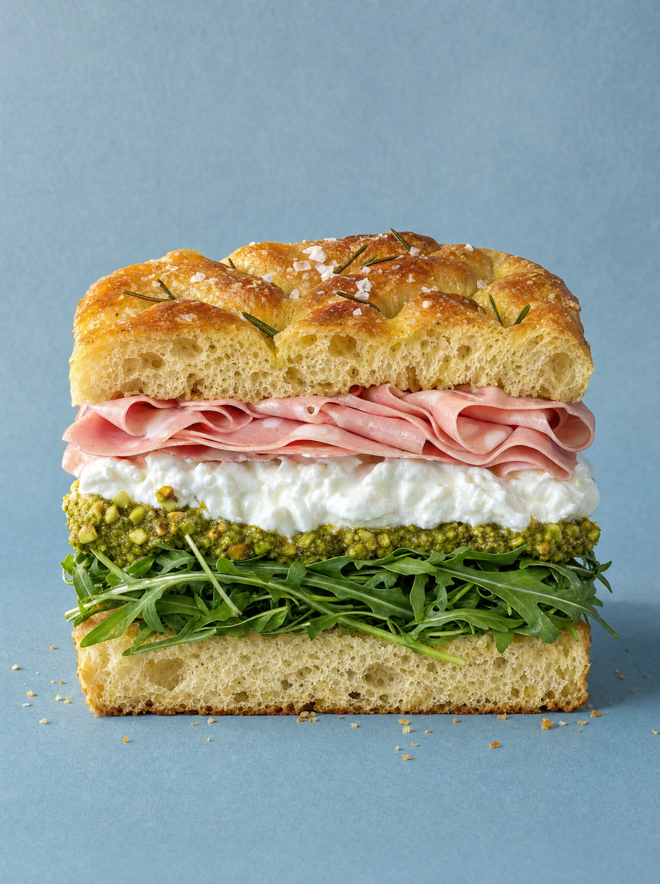
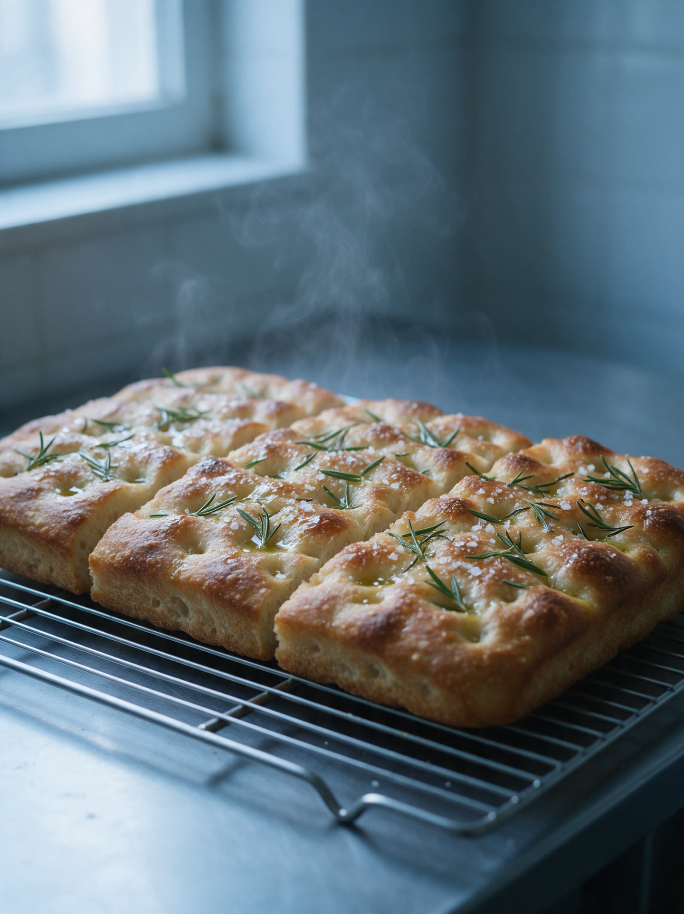
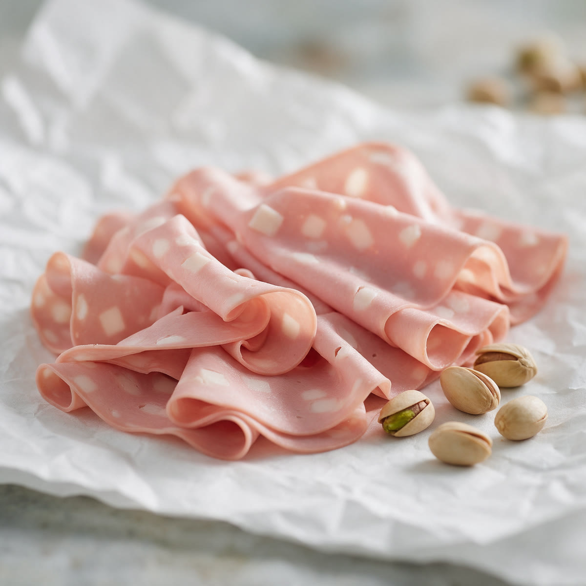
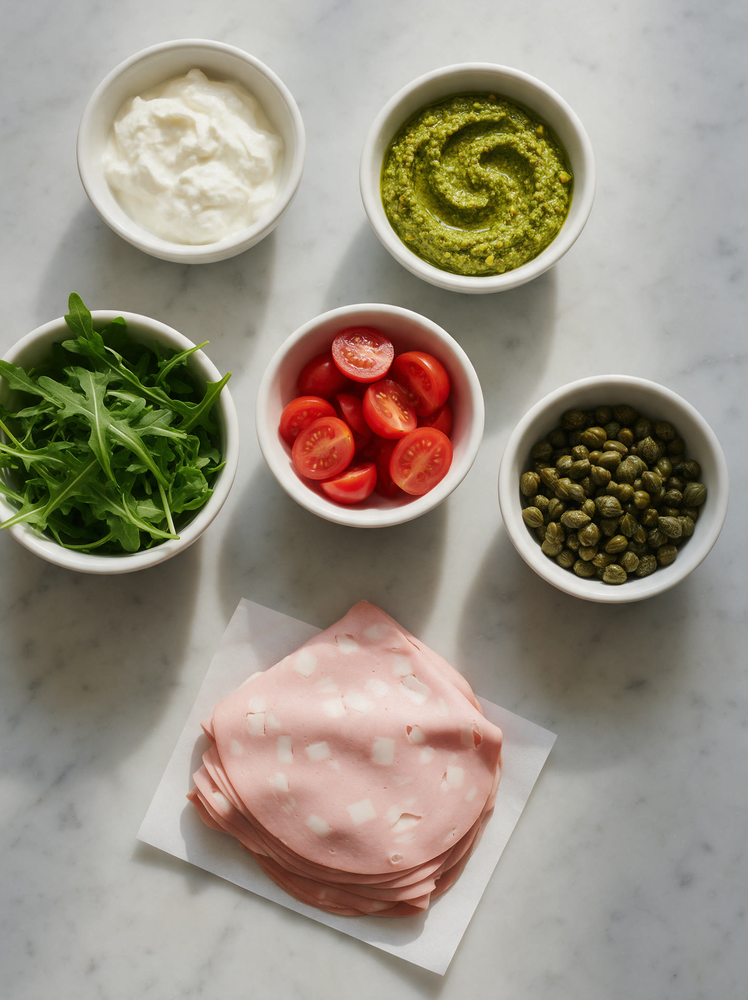
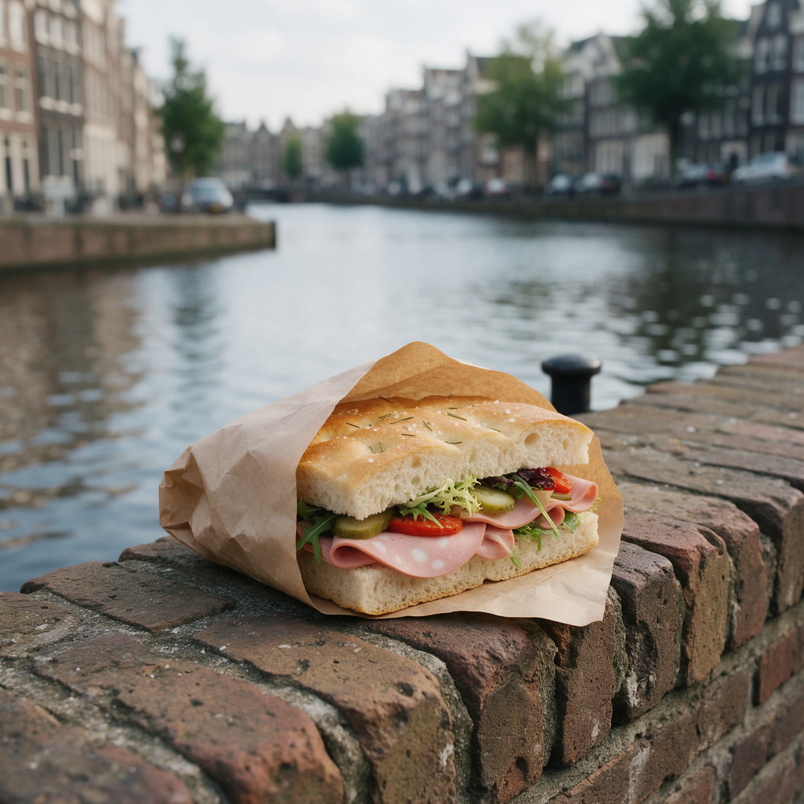
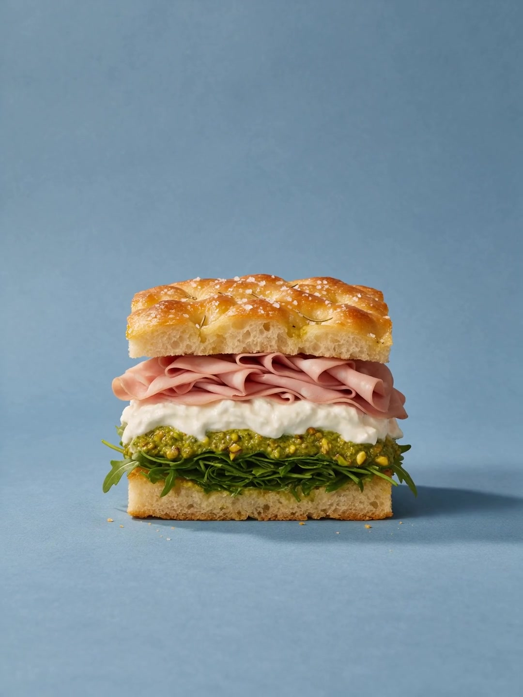

TUSSEN, broodjes aan de Haarlemmerdijk in Amsterdam
Om zeven uur uit de oven
Mortadella en stracciatella
Dan wat ertussen zit.
Pistachepesto en rucola
Tot aan de rand.
De Tussen, €11,50
Honger gekregen?
We beleggen hem pas als jij voor de toonbank staat. Haarlemmerdijk 62, elke dag tot vier uur.
Haarlemmerdijk, Amsterdam
Het gaat om wat ertussen zit.
Brood uit eigen oven, royaal belegd terwijl jij wacht. Elke dag tot vier uur.


De Tussen
€11,50
Focaccia uit eigen oven, mortadella, stracciatella, pistachepesto en rucola. Onze bestseller, en de reden voor de rij rond twaalf uur.
Kom proeven Wat zit ertussen?Broodjes om voor om te fietsen.




Kijk ertussen.
Hou de knop ingedrukt en til het brood op.
Zo krijg je hem. Elke keer.
- 01Focaccia, om zeven uur gebakken
- 02Mortadella, dun gesneden
- 03Stracciatella, elke ochtend vers
- 04Pistachepesto, van ons zelf
- 05Rucola, voor de peper
Twijfels? Terecht.
Rond twaalf uur wel. Hij gaat sneller dan je denkt, want er staan er drie achter de toonbank. Geen zin om te wachten? Kom voor half twaalf of na twee uur.
Ja. We bakken om zeven uur en rond het middaguur nog een keer. Wat hier ligt is van vandaag.
Nee. Wat nat is, zoals pesto en tomaat, gaat tussen het beleg en niet op het brood. Zo blijft de korst knapperig, ook als je eerst nog naar de gracht loopt.
Ja. Groen is helemaal vegetarisch, en elk broodje kan zonder vlees. Zeg het even aan de toonbank.
Nee, en dat is expres. We beleggen pas als jij er staat. Een broodje dat ligt te wachten, proef je.
Omdat er meer tussen zit dan je denkt. Een halve is een lunch, een hele is er twee.
Kom langs.
- Maandag tot en met vrijdag
- 08:00 tot 16:00
- Zaterdag en zondag
- 09:00 tot 16:00
Nu open, nog tot 16:00.
Tip: voor half twaalf sta je zo binnen.
